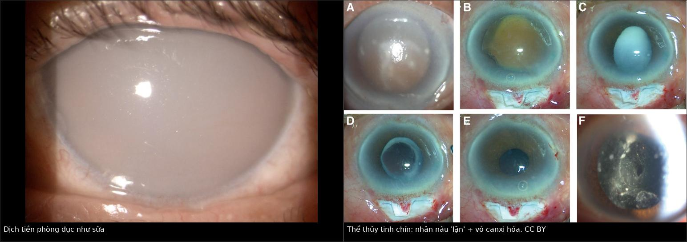
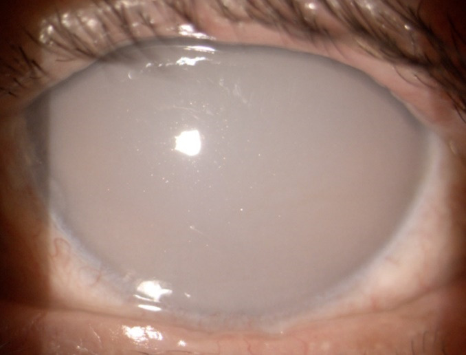
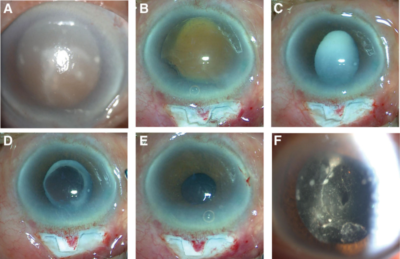
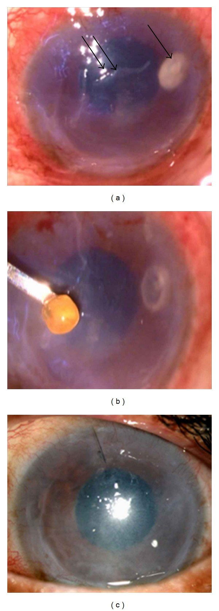

1452 — Glôcôm do thể thủy tinh chưa mổ: phacolytic & viêm do protein thể thủy tinh / Phacolytic glaucoma & lens-protein uveitis
Tags: pattern:glaucoma pattern:phacolytic pattern:phu-giac-mac pattern:viem-tien-phong pattern:mat-mot-ben vung:mat vung:tien-phong vung:the-thuy-tinh vung:goc-tien-phong protocol:slit-lamp protocol:UBM protocol:AS-OCT protocol:do-nhan-ap protocol:phaco
Mức chắc chắn (certainty): tổng hợp y văn (literature synthesis) — 1 đoàn hệ hồi cứu 488 mắt (279 phacolytic; PMC9240532), 1 ca phacolytic sau phaco 7 năm (PMC10627700), 1 ca tiền phòng đục như sữa (PMC8207859) và 1 ca giả áp-xe giác mạc (PMC3350162). Câu nào là suy luận được ghi [suy luận].
Vì sao bài này quan trọng: đây là glôcôm thứ phát góc MỞ ở mắt còn thể thủy tinh, chữa khỏi bằng lấy thể thủy tinh — nhưng thường bị điều trị như viêm nội nhãn/TASS rồi chọc tiền phòng + kháng sinh, hoặc chỉ hạ áp bằng thuốc và để mất thị lực. Ba bẫy chết người: tiền phòng đục như sữa bị đọc là mủ, thể thủy tinh dính nội mô bị đọc là áp-xe giác mạc, và "đã mổ phaco rồi" nên loại trừ phacolytic.
1. Tổng quan bệnh học – cơ chế hình ảnh
- Bốn thể glôcôm do thể thủy tinh (lens-induced glaucoma, LIG):
- Phacomorphic — thể thủy tinh phồng/to ra đẩy mống mắt ra trước → góc ĐÓNG, tiền phòng nông.
- Phacolytic — thể thủy tinh chín/quá chín (hypermature, Morgagnian); protein phân tử lượng lớn rò qua bao vào tiền phòng → góc MỞ, tiền phòng sâu.
- Lens particle — vỏ/nhân còn sót sau mổ/chấn thương/YAG bao sau → hạt chặn bè.
- Phacoantigenic (lens-induced uveitis) — phản ứng u hạt với kháng nguyên thể thủy tinh sau rách bao, thường có KP mỡ cừu.
- TẠI SAO protein thể thủy tinh gây tăng nhãn áp: thể thủy tinh có nồng độ protein cao nhất cơ thể (chủ yếu crystallin). Khi chín, sợi vỏ thoái hóa thành cụm protein hòa tan phân tử lượng lớn; các cụm này rò qua bao — bao thường trông còn nguyên, nhưng một nghiên cứu kính hiển vi điện tử trên bao "nguyên" đã thấy nhiều lỗ khuyết toàn thành (dẫn trong PMC8207859) — vào tiền phòng. Tại đây chúng bị đại thực bào ngấm và cùng với protein trực tiếp bít lưới bè → tăng sức cản thoát thủy dịch → IOP tăng. Đây là glôcôm góc mở, không phải góc đóng.
- TẠI SAO tiền phòng "đục như sữa": huyền phù protein + đại thực bào + tinh thể cholesterol/lipid tán xạ ánh sáng (hiệu ứng Tyndall mạnh) → dịch tiền phòng trắng đục, che các cấu trúc phía sau. Trên nội mô có thể thấy tinh thể trắng lấp lánh (PMC8207859).
- TẠI SAO mắt đau dữ dội: IOP tăng nhanh 40–60 mmHg làm căng bao nhãn cầu và phù giác mạc; kèm buồn nôn/nôn do phản xạ thần kinh sinh ba – phó giao cảm. Vì vậy thể này bắt chước glôcôm góc đóng cấp.
- Số liệu định lượng cốt lõi:
- Tần suất: LIG chiếm 0,64% trong 82.205 ca mổ đục thể thủy tinh tại một bệnh viện mắt (525 ca); các báo cáo khác 0,7–2,4% (PMC9240532).
- IOP trước mổ: phacolytic 40,05 ± 12,0 mmHg (279 mắt) so với phacomorphic 43,15 ± 12,9 mmHg (209 mắt), p = 0,006 (PMC9240532).
- Ca 76 tuổi (PMC8207859): thị lực sáng tối (light perception), IOP 48 mmHg, tiền phòng sâu, dịch như sữa, tinh thể trắng trên nội mô; sau mổ thị lực tốt.
- Ca 79 tuổi (PMC10627700): 7 năm sau phaco, IOP 60 mmHg, thị lực sáng tối, tiền phòng sâu 3,33 mm (mắt bên 4,02 mm trên UBM), vỏ canxi hóa, nhân nâu "lặn" (sun-setting); ECCE + trabeculectomy, ngày 1 IOP 11 mmHg, thị lực đếm ngón tay 20 cm.
- Tiên lượng: triệu chứng < 1 tuần → khả năng BCVA ≥ 6/18 cao hơn (OR 1,58; 1,0–2,4); không có tổn thương dịch kính → OR 23,53 (5,1–108,0); tuổi < 60 giảm nguy cơ viêm nặng sau mổ (OR 0,44; 0,23–0,83). Biến chứng trong mổ chung 15,4%, phức hợp dây chằng–bao 10,9%; 5,1% không đặt được IOL (PMC9240532).
2. Mẫu hình + chẩn đoán phân biệt theo vị trí (gamut)
- Theo độ sâu tiền phòng — câu hỏi đầu tiên:
- Tiền phòng SÂU + góc MỞ + thể thủy tinh còn → phacolytic, lens particle, phacoantigenic, viêm nội nhãn, TASS.
- Tiền phòng NÔNG + góc ĐÓNG + thể thủy tinh còn → phacomorphic, glôcôm góc đóng cấp nguyên phát, khối sau mống mắt.
- Theo bối cảnh mổ/chấn thương: chưa từng mổ → phacolytic/phacomorphic; sau phaco/YAG/chấn thương → lens particle/phacoantigenic (kể cả phacolytic "giả" do vỏ sau bao, PMC10627700).
- Theo mức viêm: giả mủ + tinh thể → phacolytic; KP mỡ cừu + nốt mống mắt → phacoantigenic; mủ thật + viêm dịch kính + đau sau mổ → viêm nội nhãn (cấp cứu).
- Gợi nhớ "LENS": Leak of lens protein (phacolytic), Endophthalmitis (mủ thật + vitritis), Nuclear/cortical fragments (lens particle), Swelling lens (phacomorphic).
3. Bảng so sánh phân biệt (ma trận đối chiếu)
| Thực thể (entity) | Hình ảnh điển hình | Chốt vào (rule-in) | Chốt loại (rule-out) | Gợi ý xác nhận |
|---|---|---|---|---|
| Phacolytic glaucoma | Thể thủy tinh chín/quá chín, tiền phòng sâu, dịch như sữa, tinh thể trắng trên nội mô, góc MỞ, IOP 40–60 mmHg | Dịch sữa + hạt/tinh thể + góc mở + thể thủy tinh chín | Mủ thật + viêm dịch kính → viêm nội nhãn | Lấy thể thủy tinh cấp |
| Phacomorphic glaucoma | Thể thủy tinh dày/phồng, tiền phòng nông, góc ĐÓNG, mống mắt áp sát | Tiền phòng nông + góc đóng + thể thủy tinh phồng | Tiền phòng sâu + góc mở → phacolytic | Hạ áp + lấy thể thủy tinh |
| Lens particle glaucoma | Sau mổ/chấn thương/YAG: mảnh vỏ/nhân trắng trong tiền phòng, góc mở, viêm nhẹ–vừa | Mảnh thể thủy tinh thấy được + tiền sử mổ/chấn thương | Không có mảnh, thể thủy tinh nguyên → phacolytic | Rửa tiền phòng ± lấy mảnh |
| Phacoantigenic uveitis | KP mỡ cừu, nốt mống mắt, dính đồng tử sau, viêm mạn sau rách bao | KP u hạt + nốt mống mắt + tiền sử rách bao | Không KP u hạt → phacolytic | Corticoid + lấy thể thủy tinh |
| Viêm nội nhãn cấp | Mủ thật tiền phòng, viêm dịch kính, đau tăng, sau mổ vài ngày | Mủ + vitritis + đau sau mổ | Dịch sữa không mủ, không vitritis → phacolytic | Chọc dịch kính + kháng sinh |
| TASS | Sau mổ ngày 1–2, viêm lan tỏa không mủ, giác mạc phù, không vitritis | Khởi phát rất sớm + không nhiễm khuẩn | Mủ/vitritis → viêm nội nhãn | Corticoid tại chỗ |
| Glôcôm góc đóng cấp | Tiền phòng nông, góc đóng, giác mạc phù, đồng tử giữa giãn | Góc đóng + tiền phòng nông | Góc mở + thể thủy tinh chín → phacolytic | Hạ áp + laser/mổ |

Trái: tiền phòng đục như sữa, che hoàn toàn mống mắt và thể thủy tinh (PMC8207859, CC BY 2.0). Phải: thể thủy tinh chín — vỏ trước canxi hóa, nhân nâu "lặn" xuống dưới sau giãn đồng tử; (A) trước mổ, (B–F) các thì mổ (PMC10627700, CC BY 4.0). Ảnh ghép letterbox.Ba dấu hiệu phải đọc đúng
- Dịch tiền phòng "như sữa" không phải mủ: không có màng fibrin, không vitritis, không đau tăng theo giờ sau mổ; hạt lấp lánh khi di chuyển đèn.
- Nhân "lặn" (sun-setting nucleus): nhân nâu nằm thấp nhất trong bao, vỏ đục phía trên — dấu của thể thủy tinh quá chín, gợi ý phacolytic.
- Góc MỞ trên gonioscopy: phân biệt với phacomorphic/góc đóng; nếu không soi được góc vì giác mạc phù, hạ áp tạm rồi soi lại.
4. Protocol chụp + hệ phân độ/điểm chuẩn hóa
- Đèn khe (bắt buộc): độ sâu tiền phòng, tế bào/flare, hạt/tinh thể, màng fibrin, KP, nốt mống mắt, dính đồng tử sau; đánh giá thể thủy tinh: chín, vỡ bao, nhân lặn, vỏ canxi; đo IOP (Goldmann) và soi góc khi giác mạc đủ trong.
- Siêu âm B-scan / UBM: khi không nhìn thấy thể thủy tinh sau (giác mạc phù, tiền phòng đục); UBM đo độ sâu tiền phòng (ca 79 tuổi: 3,33 mm so với 4,02 mm mắt bên) và tìm vỏ sau bao/cortex.
- AS-OCT: đánh giá phù giác mạc, mống mắt–giác mạc, vị trí thể thủy tinh; không thay được soi góc.
- Xét nghiệm: không có xét nghiệm máu đặc hiệu; hCG nếu nghi thai trứng (không áp dụng ở nam); cấy dịch tiền phòng/dịch kính chỉ khi nghi viêm nội nhãn — không chọc tiền phòng thường quy vì làm chậm lấy thể thủy tinh.
- Điều trị nội khoa (cầu nối): ức chế beta tại chỗ + alpha-agonist + ức chế carbonic anhydrase; acetazolamide uống 250 mg (hoặc IV) và mannitol 20% tĩnh mạch khi IOP rất cao; tránh pilocarpine vì co đồng tử làm tăng viêm và không mở được góc đã mở [suy luận từ cơ chế].
- Điều trị triệt để: lấy thể thủy tinh (phaco hoặc ECCE) ± IOL; kết hợp trabeculectomy khi IOP cao kéo dài/tổn thương thị thần kinh (ca 79 tuổi). Ở nơi thiếu máy, MSICS cho kết quả tốt (488 mắt; PMC9240532).
- Không có hệ phân độ chính thức cho LIG. Mô tả theo 4 trục: IOP (mmHg) × độ sâu tiền phòng (mm) × hình thái thể thủy tinh (chín/phồng/vỡ bao) × mức viêm (tế bào/flare/KP/vitritis).
- Theo dõi: ngày 1 sau mổ IOP + phù giác mạc + phản ứng tiền phòng; sau đó 1 tuần, 1 tháng, 3 tháng; cảnh báo viêm nặng/giả mủ ngày 1 (nguy cơ cao hơn ở tuổi ≥ 60, OR 0,44 cho người trẻ).
flowchart TD
A[Mắt đỏ đau + IOP cao + thị lực giảm] --> B{Tiền phòng nông hay sâu?}
B -->|Nông, góc đóng| C[Phacomorphic]
B -->|Sâu, góc mở| D{Thể thủy tinh còn nguyên?}
D -->|Còn, đục chín| E[Phacolytic]
D -->|Đã mổ hoặc chấn thương| F{Có mảnh vỏ nhân trong tiền phòng?}
F -->|Có| G[Lens particle]
F -->|Không, có KP u hạt| H[Phacoantigenic]
E --> I[Lấy thể thủy tinh cấp]
G --> I
H --> J[Corticoid + lấy thể thủy tinh]
C --> K[Hạ áp + lấy thể thủy tinh]
5. Biến thể bình thường và cạm bẫy
- Biến thể: thể thủy tinh chín nhưng bao còn nguyên, không rò protein → không tăng IOP; chỉ khi có rò + đại thực bào mới thành phacolytic. Đục thể thủy tinh đơn thuần không gây glôcôm.
- Cạm bẫy 1 — "mủ" giả: dịch sữa + tinh thể bị đọc là mủ tiền phòng → chọc tiền phòng/kháng sinh, trì hoãn mổ. Không có vitritis, không fibrin, không đau tăng sau mổ → nghĩ phacolytic.
- Cạm bẫy 2 — giả áp-xe giác mạc: thể thủy tinh dính chặt vào nội mô gây thâm nhiễm + khiếm khuyết biểu mô, bị điều trị kháng sinh/kháng nấm 2 tháng mà không khỏi; xử trí đúng là lấy thể thủy tinh (ca 73 tuổi; PMC3350162).
- Cạm bẫy 3 — "đã phaco rồi": phacolytic vẫn xảy ra sau phaco nhiều năm nếu cortex còn sau bao sau (ca 79 tuổi, 7 năm, IOP 60 mmHg; PMC10627700). Đừng loại trừ chỉ vì có IOL.
- Cạm bẫy 4 — chỉ hạ áp bằng thuốc: IOP có thể giảm tạm nhưng protein tiếp tục rò; không lấy thể thủy tinh = tái tăng + teo thị thần kinh.
- Cạm bẫy 5 — pilocarpine: co đồng tử trên mắt viêm làm dính đồng tử sau và tăng phản ứng tiền phòng; không dùng thường quy.
- Cạm bẫy 6 — bỏ sót viêm nội nhãn: nếu đau tăng, mủ thật, vitritis sau mổ → viêm nội nhãn là cấp cứu, không được xếp vào phacolytic.
6. Tự lượng giá — Blind Quiz
Ca 1 — Nam 76 tuổi, đau dữ dội mắt trái 1 ngày, nhìn sáng tối, IOP 48 mmHg.

- Gợi ý: mắt phải đã mổ phaco + IOL từ 2007; mắt trái mờ dần nhiều năm; không chấn thương.
- Hỏi: (1) Vì sao không thấy mống mắt? (2) Góc đóng hay mở? (3) Điều trị nào chữa nguyên nhân?
Bấm để hiện đáp án
- Dấu hiệu: dịch tiền phòng đục như sữa che mống mắt và thể thủy tinh; tinh thể trắng lấp lánh trên nội mô; tiền phòng sâu, góc mở.
- Chẩn đoán: phacolytic glaucoma trên thể thủy tinh quá chín — protein rò qua bao, đại thực bào bít lưới bè.
- Điều trị: hạ áp nội khoa rồi lấy thể thủy tinh; chỉ hạ áp bằng thuốc là điều trị triệu chứng.
- Nguồn: Rom J Ophthalmol 2021, PMC8207859, CC BY 2.0 (Fig. 2).
Ca 2 — Nam 79 tuổi, mờ mắt trái 7 năm, đau 1 ngày, IOP 60 mmHg, đã phaco 7 năm trước.

- Gợi ý: tiền phòng sâu, có hạt trắng–màu trôi; UBM: tiền phòng 3,33 mm.
- Hỏi: mô tả (A) trước mổ; vì sao đã có IOL mà vẫn phacolytic? Xử trí trong ca này?
Bấm để hiện đáp án
- Dấu hiệu: (A) phù giác mạc lan tỏa, vỏ trước canxi hóa thành vảy trắng, nhân nâu lặn xuống dưới; (B–F) các thì lấy nhân, thấy cortex trắng như cháo sau bao sau.
- Vì sao sau phaco vẫn phacolytic: cortex còn lại sau bao sau rò protein — thể hiếm nhưng đã báo cáo; có IOL không loại trừ.
- Xử trí: ECCE + trabeculectomy; ngày 1 IOP 11 mmHg, thị lực FC 20 cm; không đặt IOL vì bao không vững.
- Nguồn: Medicine 2023, PMC10627700, CC BY 4.0 (Fig. 1).
Ca 3 — Nữ 73 tuổi, đau–sợ ánh sáng–đỏ mắt trái 2 tháng, đã dùng kháng sinh và kháng nấm không khỏi.

- Gợi ý: thị lực giảm, giác mạc có thâm nhiễm sâu + khiếm khuyết biểu mô; không chấn thương, đã dùng kháng sinh và kháng nấm 2 tháng.
- Hỏi: vì sao chẩn đoán sai 2 tháng? Mô bệnh học cho thấy gì?
Bấm để hiện đáp án
- Dấu hiệu: (a) thâm nhiễm trong nhu mô giác mạc (mũi tên) + khiếm khuyết biểu mô quanh đó; (b) thể thủy tinh vàng lấy ra từ trong ổ thâm nhiễm.
- Chẩn đoán: thể thủy tinh dính chặt nội mô gây phản ứng kiểu phacolytic, giả áp-xe giác mạc — không phải nhiễm khuẩn/nấm.
- Mô bệnh: thâm nhiễm bạch cầu đa nhân + đại thực bào + tế bào khổng lồ đa nhân quanh chất thể thủy tinh (PAS ×400) → phản ứng với kháng nguyên thể thủy tinh.
- Xử trí: rửa tiền phòng + lấy thể thủy tinh, kháng sinh phối hợp; triệu chứng hết sau mổ.
- Nguồn: Case Rep Ophthalmol Med 2011, PMC3350162, CC BY 3.0 (Fig. 1).
Bài liên quan chéo
- 400 – Tổng quan Mắt & thị giác
- 1442 – Mảnh thể thủy tinh còn sót trong tiền phòng: mảnh 0,96 × 0,75 mm, IOP 14–15 mmHg, UBM/AS-OCT là chốt
- 1411 – Tăng nhãn áp do corticoid nội nhãn: đỉnh tháng 2–3, implant lạc tiền phòng
- 442 – Glôcôm & OCT: RNFL/GCL, theo dõi tổn thương thị thần kinh
- 418 – Nanophthalmos & tràn dịch hắc mạc: góc hẹp, glaucoma 51,88%
Không dùng để chẩn đoán độc lập khi chưa có người hướng dẫn.